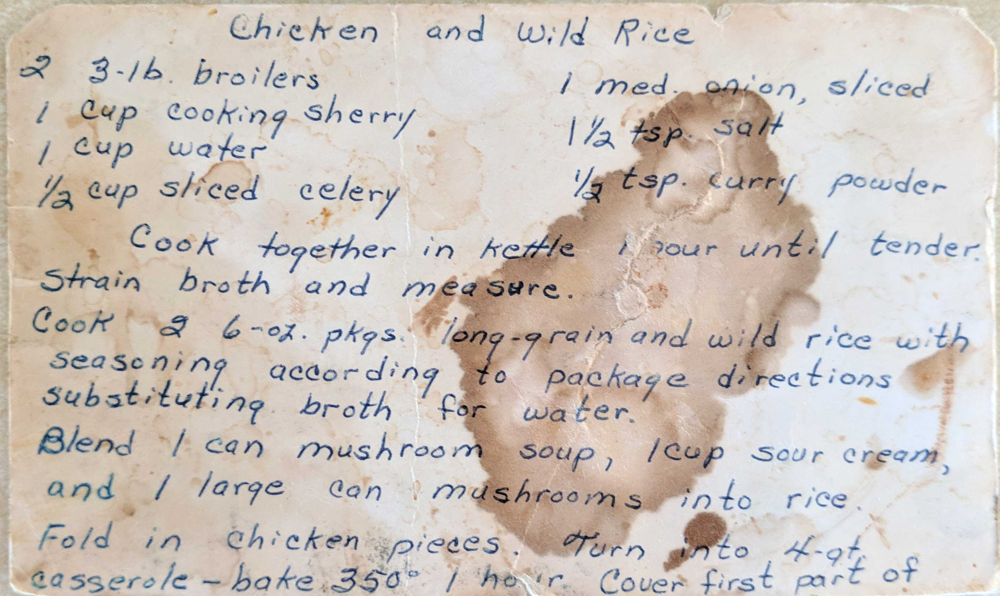
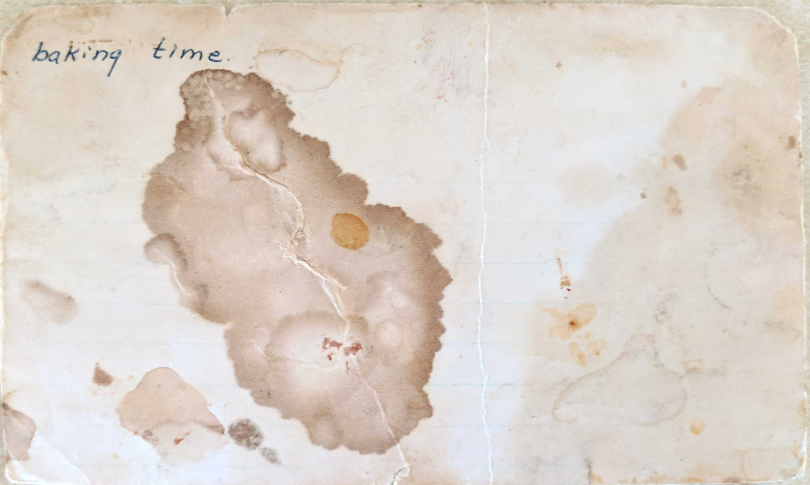

Chicken and Wild Rice
2 3-lb. broilers
1 cup cooking sherry
1 cup water
1/2 cup sliced celery
1 med. onion, sliced
1 1/2 tsp. salt
1/2 tsp. curry powder
Cook together in kettle 1 hour until tender. Strain broth and measure.
Cook 2 6-oz. pkgs. long-grain and wild rice with seasoning according to package directions substituting broth for water.
Blend 1 can mushroom soup, 1 cup sour cream, and 1 large can mushrooms into rice.
Fold in chicken pieces. Turn into 4 qt. casserole - bake 350° 1 hour. Cover first part of

baking time.